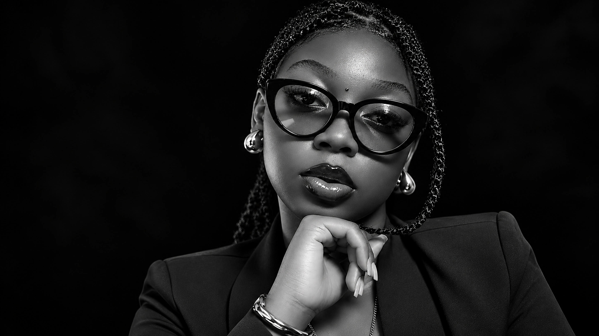
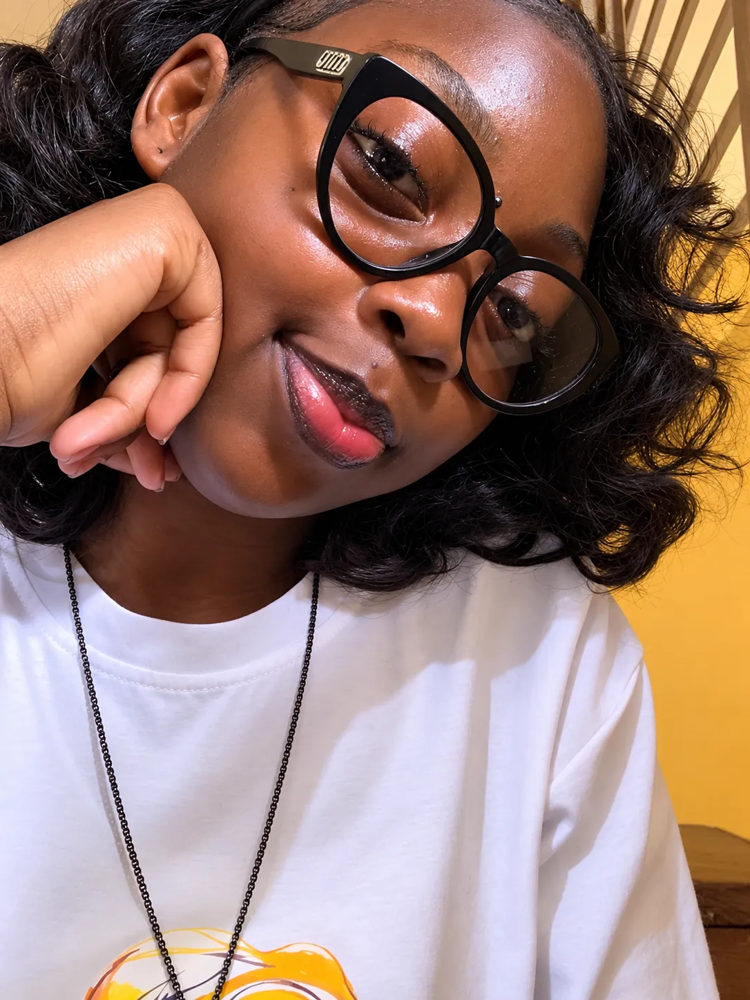

UNE VIE
EN MOUVEMENT

LIRE
SON HISTOIRE
BIO
GRAPHIE
« Mon histoire continue de s'écrire,
au fil des événements et des rencontres. »
Une histoire,
plusieurs horizons.
Je m'appelle Exaucée Zango Kasaji. Je suis née à Kinshasa, en République démocratique du Congo, le 7 septembre 2007.
Cadette d'une famille de deux filles, j'ai grandi à Kinshasa avant de m'installer à Matadi en juin 2026. Ce récit rassemble les lieux, les personnes et les étapes qui composent mon parcours.

EXAUCÉE · KINSHASA — MATADI
Les liens qui
me constituent.
Mes origines familiales portent plusieurs héritages. Ma mère, Marie Muzaba Kwibala, est d'origine yansi. Mon père, Adolph Tshisola Kasaji, était d'origine tshokwe. Il est décédé en 2009.
Ma grand-mère paternelle, Zango, est également décédée. Ma grand-mère maternelle s'appelait Eugénie. Sa disparition, le 30 septembre 2024, a marqué mon histoire.
Ma tante paternelle Yvette, que j'appelle affectueusement « tata », occupe une place importante dans mon histoire familiale. Je suis la cadette d'une famille composée de deux filles.
Apprendre,
se découvrir.
Des étapes qui dessinent un chemin, avec ses pauses, ses reprises et ses nouveaux départs.
- 2012
Les premières années
Début des études primaires à l'école Tobongisa, dans la commune de Ngaliema à Kinshasa.
- 2015
Une interruption
Une année de pause dans les études pour des raisons de santé.
- 2019
Un premier accomplissement
Obtention du certificat de fin d'études primaires et début des études secondaires.
- 2021
L'Institut des Beaux-Arts
Intégration de l'Institut des Beaux-Arts.
- 2025
Arts plastiques
Obtention du diplôme d'État en arts plastiques.
- OCT. 2026
Une nouvelle discipline
Début de la première année de Licence en informatique à l'Institut Supérieur d'Informatique, de Programmation et d'Analyse (ISIPA).
UNE ŒUVRE
ÉCRITE EN 2025
L'Ange
déchu
DOUZE CHAPITRESEn 2025, j'ai écrit L'Ange déchu, un ouvrage de douze chapitres.
Une œuvre qui fait partie de mon parcours d'écriture.
Quatre langues.
Des voix familières.
Je parle quatre langues et je maîtrise particulièrement le français et le lingala.
Des dates
dans ma mémoire.
Certains moments restent présents dans une histoire personnelle. Je les évoque ici avec pudeur.
Le début d'une période de dépression.
Le décès de ma grand-mère.
Les personnes
rencontrées en chemin.
Consolate · Léa · Renath
Herdy · Micheline
Mpenzi · Clever · Roxane
Princilia · Maria
Changer de ville.
Ouvrir un nouveau chapitre.
« De Kinshasa à Matadi, mon histoire continue de s'écrire, au fil des événements et des rencontres qui marquent ma vie. »
Exaucée Zango Kasaji